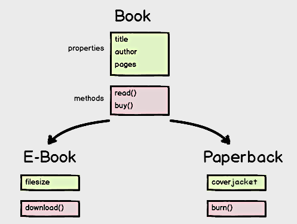

Object Oriented JavaScript
What is important about object oriented programming?
Software is a collection of cooperating objects rather than a collection of functions or simply a list of commands.
- An object contains state and behavior:
- state aka data, properties, variables
- behavior aka functions, methods, messages
What does this really mean? Why do we care?
Objects are so great because they contain DATA and FUNCTIONALITY
- Think of it like a radio
- A radios have properties like "made of metal", "has two button", "uses batteries"
- And it also has functionality, like "plays music"
- As programmers, we like to control both!
SideNote
JavaScript is really an object-oriented language, but it has properties that helps it to operate like one. Objects are still critically important
Objects
- We have used Objects for storing information and we manipulated and accessed the data within objects.
- Remember: An object is a container for values in the form of properties and functionality in the form of methods.
- Ex: .getElementById is a method to find an h1 tag with the ID of header. .getElementById is a method on the document object.
Adding Methods to Objects
function diceRoll() {
var sides = 6;
var randomNumber = Math.floor(Math.random() * sides) + 1;
console.log(randomNumber);
}
var dice = {
};
Adding Methods to Objects
var dice = {
roll: function diceRoll() {
var sides = 6;
var randomNumber = Math.floor(Math.random() * sides) + 1;
console.log(randomNumber);
}
};
Run dice.roll in the console.
Adding Methods to Objects
var dice = {
roll: function() {
var sides = 6;
var randomNumber = Math.floor(Math.random() * sides) + 1;
console.log(randomNumber);
}
};
Run dice.roll() in the console.
Variable Scope in Objects
If we have the sides as a property of the dice object, how will the function call it?
var dice = {
roll: function() {
var sides = 6;
var randomNumber = Math.floor(Math.random() * sides) + 1;
console.log(randomNumber);
}
};
var dice = {
sides: 6,
roll: function() {
var randomNumber = Math.floor(Math.random() * dice.sides) + 1;
console.log(randomNumber);
}
};
Now we can easily change the value of the property sides in our code by dice.sides=10.
Remember Scope?
'this' keyword
- JavaScript gives you, the developer, access to an extremely powerful keyword - “this”. “this” can be used to access data contextually, allowing your functions and methods to access the data that they need based on a specific context.
- The ‘this’ keyword can be used to access values, methods, and other objects on a context specific basis.
- Meaning, ‘this’ can change based on where it is used.
More on 'this'
"this" always points to the object that it has been linked to
var circle = {
radius: 2
};
circle.circumference = function() {
return Math.PI * 2 * this.radius;
}
console.log(circle.circumference()); // 12.566370614359172
"this" allows one function (method) to operate on many states (instances)
var biggerCircle = {
radius: 4
};
biggerCircle.circumference = circle.circumference;
console.log(biggerCircle.circumference()); // 25.132741228718345
Another Example
var portland = {
name: "Portland",
bridges: 12,
airport: 1,
soccerTeams: 1,
logNumberOfBridges: function () {
console.log (“There are “ + this.bridges + “ bridges in ” + this.name);
}
}
portland.logNumberOfBridges();
'this'
this is an identifier that gets a value bound to it, much like a variable.
But instead of identifiying the values explicitly in your code, this gets bound to the correct object automatically.
Brainstorm
- What should you do if you want to create a lot of objects with some of the same keys/properties but different values?
- EX: You are working at Facebook and want to be able to store the same type of information about all your users.
Object Literal vs Object Constructor
- Object literals defines an object literally: var myDog = {name: 'coach', age: '1'}
- Object literals aren't the only way to create objects. If you're making a lot of similar objects you can use a constructor function to generate new objects of the same kind.
- Object literals are great for one off objects or passing values to a function, but if you want to create multiple objects of the same kind or type, you'll need to use constructor functions.
Object Constructor Properties
- Describes how an object should be created (example: dog).
- Each object created is known as an instance of that object type (example: coach).
- Calling the constructor object to create an instance is called instantiation.
Object Literal vs Object Constructor
Object Literal
var flower = {
color : "red",
petals : 32,
smellsPretty : true
};
Constructor Object
function Flower(color, petals){
this.color = color;
this.petals = petals;
this.smellsPretty = true;
}
Creating a user-defined object requires two steps:
- Define the object type by writing a function.
- Create an instance of the object with new.
Example:
//Defines the new object
function Contact (name, email) {
this.name = name;
this.email = email;
}
//Creates the new instance
var myContact = new Contact('Laura', 'laura@hello.com');
Important: the name of the function is capitalized so you know it is a constructor!
What would the name value be in myContact?
console.log(myContact.name);
What would the name value be in myOtherContact?
function Contact (name, email) {
this.name = name;
this.email = email;
}
//Creates the new instance
var myOtherContact = new Contact('Hubs', 'hubs@hello.com');
console.log(myOtherContact.name);
var myContact = new Contact('Laura', 'laura@hello.com');
- Keyword “new” turns regular function into a constructor function.
- And returns a new instance of the Contact object, myContact.
- This is called instantiation.
Can you think of other specific times when you would need to use an object constructor?
Let's Review "new"
- Creates a new Object
- Creates and binds a new
this to that object
- It sets this new object's
prototype property to be the constructor function's prototype object
- It executes the constructor function
- It returns the newly created object
this to that objectprototype property to be the constructor function's prototype objectAnimal Exercise
Given the following code:
function Animal(species, noise) {
this.species = species;
this.noise = noise;
this.makeNoise = function() {
console.log(this.noise + ", " + this.noise);
}
}
How would you create an instance of an Animal?
Question
How would you describe a task in a todo list. Your task should have:
- A description of the task.
- An attribute to define if the task is done.
- A method to call when it is done.
Solution
function TodoListItem(description) {
this.description = description;
this.isDone = false;
this.markAsComplete = function() {
this.isDone = true;
}
}
var task = new TodoListItem("Do the laundry!");
Question
What kind of objects you might need for your new Social Media site?
What would be the properties on those objects?
How do we add a method to a constructor?
If we run this code over and over again (to create new instances):
function City (name, nickname) {
this.name = name;
this.nickname = nickname;
this.slogan = function () {
console.log(this.name + " is the best city in the country!");
};
}
var sanFrancisco = new City("San Francisco", "City By The Bay");
Every time we create an object, the program runs the code, and a new anonymous function is created again and again. Your program is taking up more space in the computer’s memory.
Using 'prototype'!
We can add a method onto this object constructor by using prototype.
function City (name, nickname) {
this.name = name;
this.nickname = nickname;
}
City.prototype.slogan = function(){
console.log(this.name + " is the best city in the country!");
}
var sanFrancisco = new City("San Francisco", "City By The Bay");
sanFrancisco.slogan();
Another Example
function Circle(radius) {
this.radius = radius;
}
Circle.prototype.circumference = function() {
return Math.PI * 2 * this.radius;
}
Circle.prototype.area = function() {
return Math.PI * this.radius * this.radius;
}
var circle = new Circle(2);
circle.radius; // this is 2; it's stored on the circle
circle.area; // this is a function; it's stored on Circle.prototype
circle.area(); // this is a function call; inside it, "this" points to the circle
More on prototype!
A constructor function makes an object linked to its own prototype
function Greeter(who) {
this.me = who;
}
Greeter.prototype.identify = function (){
return "I am " + this.me;
};
var person1 = new Greeter("Alice");
var person2 = new Greeter("Bob");
person1.constructor === Greeter;
person1.constructor === person2.constructor;
Time for some whiteboard diagram drawing!
The magic of prototype and this!
function Greeter(who) {
this.me = who;
}
Greeter.prototype.identify = function() {
return "I am " + this.name;
};
Greeter.prototype.speak = function() {
alert("Hello, " + this.identify() + ".");
};
var person1 = new Greeter("Alice");
person1.speak():
- 'this' can be thought of as "dynamic scope" (as opposed to lexical scope like global and local scope)
- 'this' tells us which building to go into, or which address of the building downtown to go into
- 'prototype' tells us how we are going to find properties if they don't exist on the direct object
A helpful diagram
- Objects can inherit properties/methods of other objects
- Objects can implement parent methods in different ways
How do we help our objects extend to access more methods?
function Greeter(who) {
this.me = who;
}
Greeter.prototype.identify = function(){
return "I am " + this.me;
}
function Bar (who) {
Greeter.call(this,who);
}
Bar.prototype = Object.create(Greeter.prototype);
Bar.prototype.speak = function (){
alert("Hello, " + this.identity() + ".");
}
var customer1 = new Bar ("Viola");
var customer2 = new Bar ("Jamie");
customer1.speak();
What just happened?
- We wanted to create a child function called Bar that is supposed to inherit from or EXTEND the parent function
- aka we need Bar's prototype to extend Greeter's prototype so that Bar can link to Greeter's methods
- .call()
- Object.create
Another example
// The constructor function
function PaperBack(title, author, numPages, cover) {
Book.call(this, title, author, numPages);
this.cover = cover;
}
// Extending the Book object
PaperBack.prototype = Object.create(Book.prototype);
// A new method on this object
PaperBack.prototype.burn = function() {
console.log("Omg, you burnt all " + this.numPages + " pages");
this.numPages = 0;
}
// Instantiating a new object
var paperback = new PaperBack("1984", "George Orwell", 250, "cover.jpg");
paperback.read();
paperback.burn();

Exercise!
Review Exercise
THE END
Thank you for your attention!